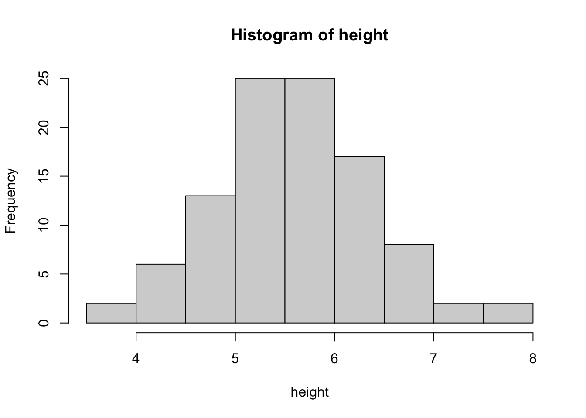
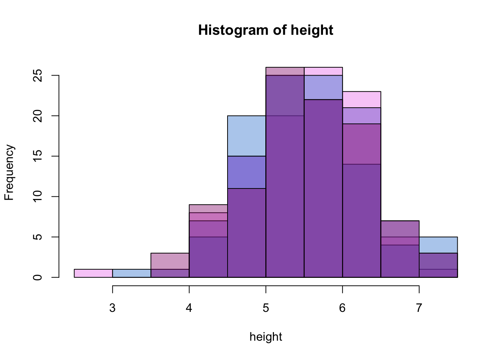
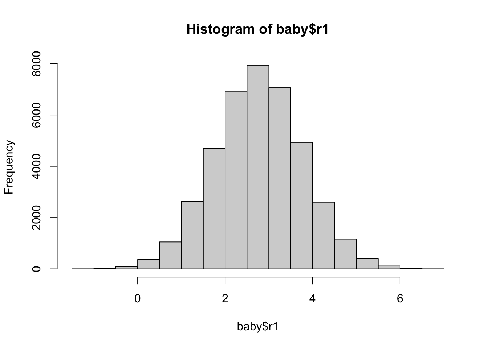
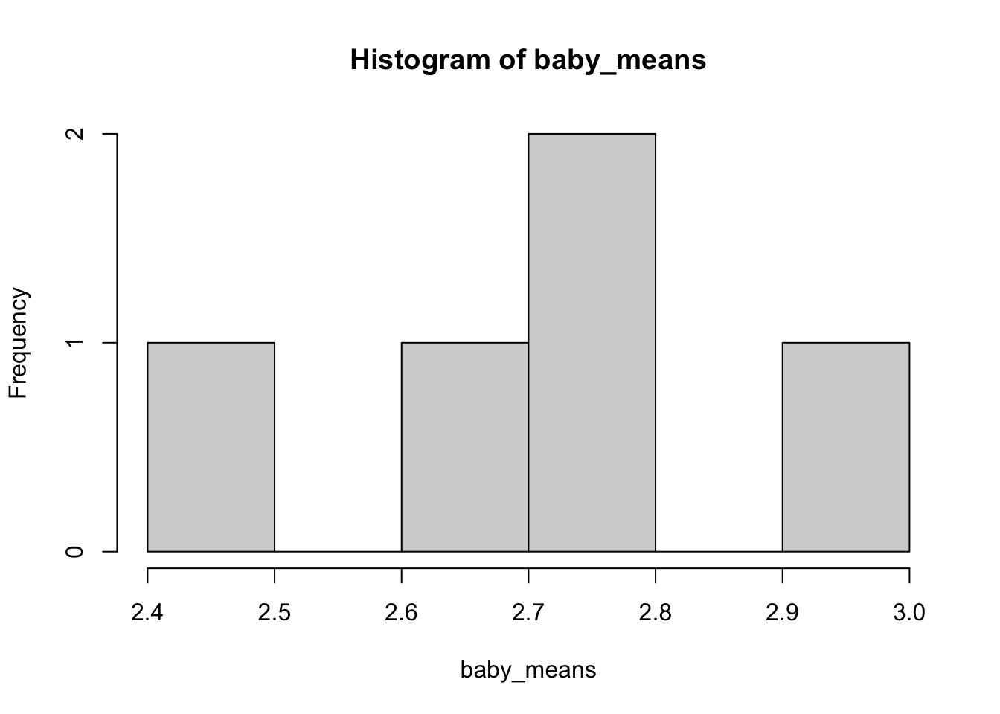
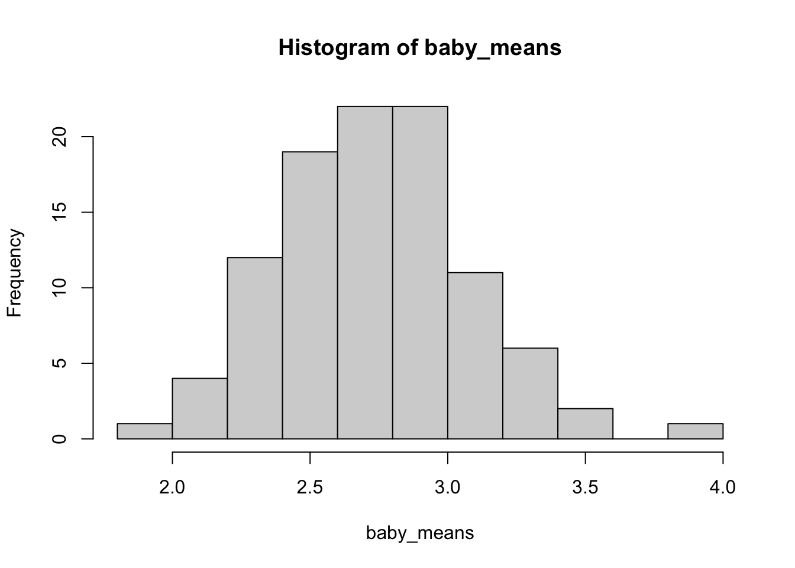
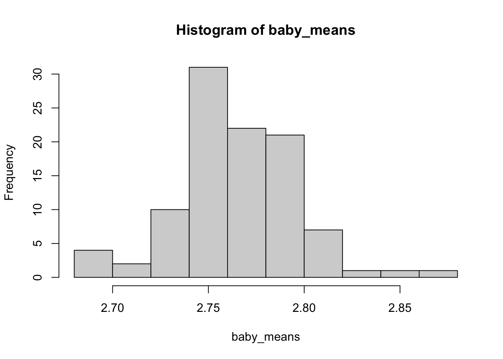
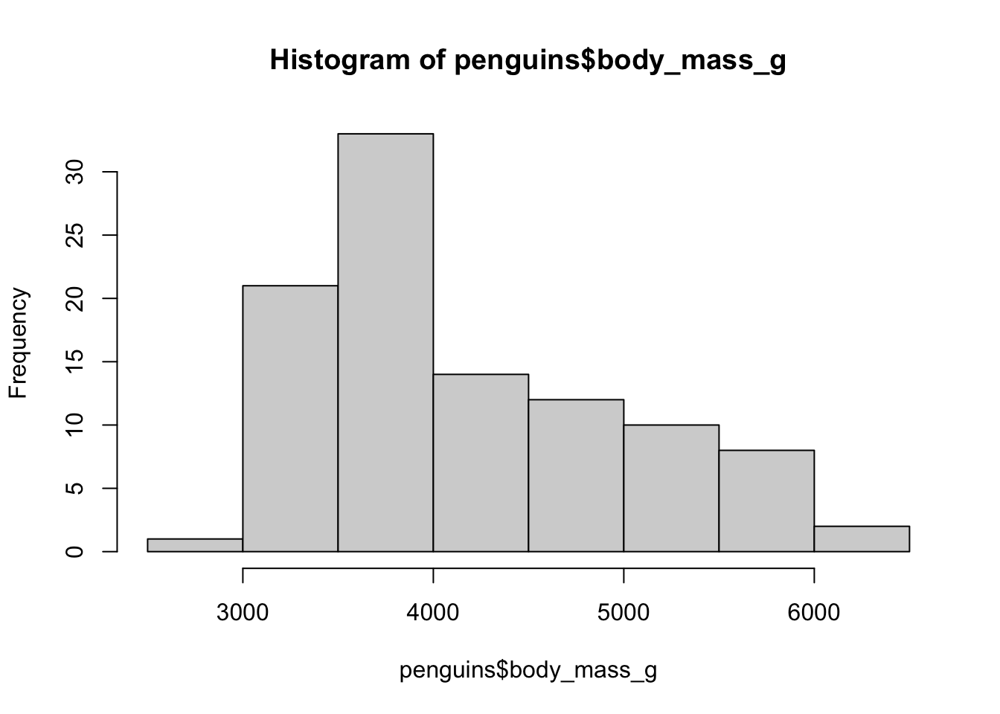
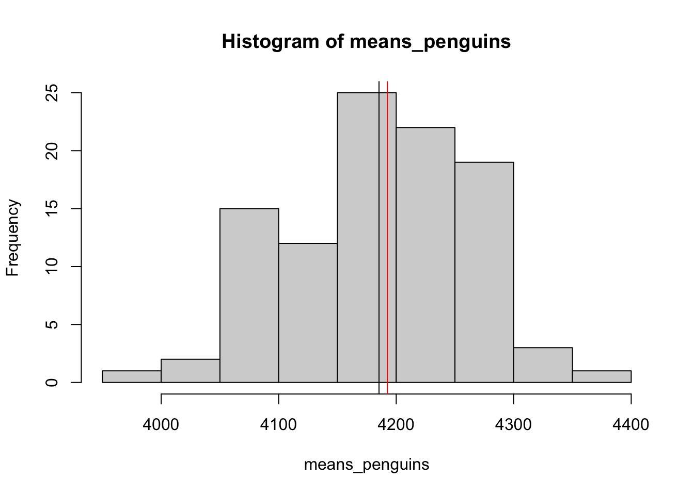

<!DOCTYPE html>
<html xmlns="http://www.w3.org/1999/xhtml" lang="en" xml:lang="en"><head>

<meta charset="utf-8">
<meta name="generator" content="quarto-1.2.269">

<meta name="viewport" content="width=device-width, initial-scale=1.0, user-scalable=yes">


<title>Week 8</title>
<style>
code{white-space: pre-wrap;}
span.smallcaps{font-variant: small-caps;}
div.columns{display: flex; gap: min(4vw, 1.5em);}
div.column{flex: auto; overflow-x: auto;}
div.hanging-indent{margin-left: 1.5em; text-indent: -1.5em;}
ul.task-list{list-style: none;}
ul.task-list li input[type="checkbox"] {
  width: 0.8em;
  margin: 0 0.8em 0.2em -1.6em;
  vertical-align: middle;
}
pre > code.sourceCode { white-space: pre; position: relative; }
pre > code.sourceCode > span { display: inline-block; line-height: 1.25; }
pre > code.sourceCode > span:empty { height: 1.2em; }
.sourceCode { overflow: visible; }
code.sourceCode > span { color: inherit; text-decoration: inherit; }
div.sourceCode { margin: 1em 0; }
pre.sourceCode { margin: 0; }
@media screen {
div.sourceCode { overflow: auto; }
}
@media print {
pre > code.sourceCode { white-space: pre-wrap; }
pre > code.sourceCode > span { text-indent: -5em; padding-left: 5em; }
}
pre.numberSource code
  { counter-reset: source-line 0; }
pre.numberSource code > span
  { position: relative; left: -4em; counter-increment: source-line; }
pre.numberSource code > span > a:first-child::before
  { content: counter(source-line);
    position: relative; left: -1em; text-align: right; vertical-align: baseline;
    border: none; display: inline-block;
    -webkit-touch-callout: none; -webkit-user-select: none;
    -khtml-user-select: none; -moz-user-select: none;
    -ms-user-select: none; user-select: none;
    padding: 0 4px; width: 4em;
    color: #aaaaaa;
  }
pre.numberSource { margin-left: 3em; border-left: 1px solid #aaaaaa;  padding-left: 4px; }
div.sourceCode
  {   }
@media screen {
pre > code.sourceCode > span > a:first-child::before { text-decoration: underline; }
}
code span.al { color: #ff0000; font-weight: bold; } /* Alert */
code span.an { color: #60a0b0; font-weight: bold; font-style: italic; } /* Annotation */
code span.at { color: #7d9029; } /* Attribute */
code span.bn { color: #40a070; } /* BaseN */
code span.bu { color: #008000; } /* BuiltIn */
code span.cf { color: #007020; font-weight: bold; } /* ControlFlow */
code span.ch { color: #4070a0; } /* Char */
code span.cn { color: #880000; } /* Constant */
code span.co { color: #60a0b0; font-style: italic; } /* Comment */
code span.cv { color: #60a0b0; font-weight: bold; font-style: italic; } /* CommentVar */
code span.do { color: #ba2121; font-style: italic; } /* Documentation */
code span.dt { color: #902000; } /* DataType */
code span.dv { color: #40a070; } /* DecVal */
code span.er { color: #ff0000; font-weight: bold; } /* Error */
code span.ex { } /* Extension */
code span.fl { color: #40a070; } /* Float */
code span.fu { color: #06287e; } /* Function */
code span.im { color: #008000; font-weight: bold; } /* Import */
code span.in { color: #60a0b0; font-weight: bold; font-style: italic; } /* Information */
code span.kw { color: #007020; font-weight: bold; } /* Keyword */
code span.op { color: #666666; } /* Operator */
code span.ot { color: #007020; } /* Other */
code span.pp { color: #bc7a00; } /* Preprocessor */
code span.sc { color: #4070a0; } /* SpecialChar */
code span.ss { color: #bb6688; } /* SpecialString */
code span.st { color: #4070a0; } /* String */
code span.va { color: #19177c; } /* Variable */
code span.vs { color: #4070a0; } /* VerbatimString */
code span.wa { color: #60a0b0; font-weight: bold; font-style: italic; } /* Warning */
</style>


<script src="week8_key_files/libs/clipboard/clipboard.min.js"></script>
<script src="week8_key_files/libs/quarto-html/quarto.js"></script>
<script src="week8_key_files/libs/quarto-html/popper.min.js"></script>
<script src="week8_key_files/libs/quarto-html/tippy.umd.min.js"></script>
<script src="week8_key_files/libs/quarto-html/anchor.min.js"></script>
<link href="week8_key_files/libs/quarto-html/tippy.css" rel="stylesheet">
<link href="week8_key_files/libs/quarto-html/quarto-syntax-highlighting.css" rel="stylesheet" id="quarto-text-highlighting-styles">
<script src="week8_key_files/libs/bootstrap/bootstrap.min.js"></script>
<link href="week8_key_files/libs/bootstrap/bootstrap-icons.css" rel="stylesheet">
<link href="week8_key_files/libs/bootstrap/bootstrap.min.css" rel="stylesheet" id="quarto-bootstrap" data-mode="light">


</head>

<body class="fullcontent">

<div id="quarto-content" class="page-columns page-rows-contents page-layout-article">

<main class="content" id="quarto-document-content">

<header id="title-block-header" class="quarto-title-block default">
<div class="quarto-title">
<h1 class="title">Week 8</h1>
</div>


<div class="quarto-title-meta">

    
  
    
  </div>
  

</header>

<section id="warm-up" class="level2">
<h2 class="anchored" data-anchor-id="warm-up">Warm-up</h2>
<p>1. We want to create a list of filepaths for our participants. Write a for loop that combines information about the participant condition and participant ID into a path name. Save the output into a vector called filepaths.</p>
<p>your file path should contain both condition and participant info:</p>
<p>For example, the output for participant 1 would be: <code>"../data/cond1/data_subj01"</code></p>
<p>and for participant 2 it would be: <code>"../data/cond2/data_subj02"</code></p>
<p>The participants and conditions are:</p>
<div class="cell">
<div class="sourceCode cell-code" id="cb1"><pre class="sourceCode r code-with-copy"><code class="sourceCode r"><span id="cb1-1"><a href="#cb1-1" aria-hidden="true" tabindex="-1"></a><span class="co"># load in libraries</span></span>
<span id="cb1-2"><a href="#cb1-2" aria-hidden="true" tabindex="-1"></a><span class="fu">library</span>(tidyverse)</span></code><button title="Copy to Clipboard" class="code-copy-button"><i class="bi"></i></button></pre></div>
<div class="cell-output cell-output-stderr">
<pre><code>── Attaching core tidyverse packages ──────────────────────── tidyverse 2.0.0 ──
✔ dplyr     1.1.0     ✔ readr     2.1.4
✔ forcats   1.0.0     ✔ stringr   1.5.0
✔ ggplot2   3.4.1     ✔ tibble    3.1.8
✔ lubridate 1.9.2     ✔ tidyr     1.3.0
✔ purrr     1.0.1     
── Conflicts ────────────────────────────────────────── tidyverse_conflicts() ──
✖ dplyr::filter() masks stats::filter()
✖ dplyr::lag()    masks stats::lag()
ℹ Use the ]8;;http://conflicted.r-lib.org/conflicted package]8;; to force all conflicts to become errors</code></pre>
</div>
<div class="sourceCode cell-code" id="cb3"><pre class="sourceCode r code-with-copy"><code class="sourceCode r"><span id="cb3-1"><a href="#cb3-1" aria-hidden="true" tabindex="-1"></a><span class="co"># create data</span></span>
<span id="cb3-2"><a href="#cb3-2" aria-hidden="true" tabindex="-1"></a>subj <span class="ot">&lt;-</span> <span class="fu">c</span>(<span class="st">"subj01"</span>, <span class="st">"subj02"</span>, <span class="st">"subj03"</span>, <span class="st">"subj04"</span>, <span class="st">"subj05"</span>, <span class="st">"subj06"</span>, <span class="st">"subj07"</span>, <span class="st">"subj08"</span>)</span>
<span id="cb3-3"><a href="#cb3-3" aria-hidden="true" tabindex="-1"></a></span>
<span id="cb3-4"><a href="#cb3-4" aria-hidden="true" tabindex="-1"></a>cond1 <span class="ot">&lt;-</span> <span class="fu">c</span>(<span class="st">"subj01"</span>, <span class="st">"subj04"</span>, <span class="st">"subj07"</span>, <span class="st">"subj08"</span>)</span>
<span id="cb3-5"><a href="#cb3-5" aria-hidden="true" tabindex="-1"></a>cond2 <span class="ot">&lt;-</span> <span class="fu">c</span>(<span class="st">"subj02"</span>, <span class="st">"subj03"</span>, <span class="st">"subj05"</span>, <span class="st">"subj06"</span>)</span></code><button title="Copy to Clipboard" class="code-copy-button"><i class="bi"></i></button></pre></div>
</div>
<div class="cell">
<div class="sourceCode cell-code" id="cb4"><pre class="sourceCode r code-with-copy"><code class="sourceCode r"><span id="cb4-1"><a href="#cb4-1" aria-hidden="true" tabindex="-1"></a><span class="co"># your for loop here: </span></span>
<span id="cb4-2"><a href="#cb4-2" aria-hidden="true" tabindex="-1"></a>filepaths <span class="ot">&lt;-</span> <span class="fu">c</span>()</span>
<span id="cb4-3"><a href="#cb4-3" aria-hidden="true" tabindex="-1"></a></span>
<span id="cb4-4"><a href="#cb4-4" aria-hidden="true" tabindex="-1"></a><span class="cf">for</span> (i <span class="cf">in</span> <span class="dv">1</span><span class="sc">:</span><span class="fu">length</span>(cond1)){</span>
<span id="cb4-5"><a href="#cb4-5" aria-hidden="true" tabindex="-1"></a>  filepaths <span class="ot">=</span> <span class="fu">c</span>(filepaths, <span class="fu">paste0</span>(<span class="st">'../data/cond1/data_'</span>, cond1[i]))</span>
<span id="cb4-6"><a href="#cb4-6" aria-hidden="true" tabindex="-1"></a>}</span>
<span id="cb4-7"><a href="#cb4-7" aria-hidden="true" tabindex="-1"></a></span>
<span id="cb4-8"><a href="#cb4-8" aria-hidden="true" tabindex="-1"></a><span class="cf">for</span> (i <span class="cf">in</span> <span class="dv">1</span><span class="sc">:</span><span class="fu">length</span>(cond2)){</span>
<span id="cb4-9"><a href="#cb4-9" aria-hidden="true" tabindex="-1"></a>  filepaths <span class="ot">=</span> <span class="fu">c</span>(filepaths, <span class="fu">paste0</span>(<span class="st">'../data/cond2/data_'</span>, cond2[i]))</span>
<span id="cb4-10"><a href="#cb4-10" aria-hidden="true" tabindex="-1"></a>}</span>
<span id="cb4-11"><a href="#cb4-11" aria-hidden="true" tabindex="-1"></a></span>
<span id="cb4-12"><a href="#cb4-12" aria-hidden="true" tabindex="-1"></a>filepaths</span></code><button title="Copy to Clipboard" class="code-copy-button"><i class="bi"></i></button></pre></div>
<div class="cell-output cell-output-stdout">
<pre><code>[1] "../data/cond1/data_subj01" "../data/cond1/data_subj04"
[3] "../data/cond1/data_subj07" "../data/cond1/data_subj08"
[5] "../data/cond2/data_subj02" "../data/cond2/data_subj03"
[7] "../data/cond2/data_subj05" "../data/cond2/data_subj06"</code></pre>
</div>
</div>
<div class="cell">
<div class="sourceCode cell-code" id="cb6"><pre class="sourceCode r code-with-copy"><code class="sourceCode r"><span id="cb6-1"><a href="#cb6-1" aria-hidden="true" tabindex="-1"></a><span class="co"># your for loop here: </span></span>
<span id="cb6-2"><a href="#cb6-2" aria-hidden="true" tabindex="-1"></a>filepaths <span class="ot">&lt;-</span> <span class="fu">c</span>()</span>
<span id="cb6-3"><a href="#cb6-3" aria-hidden="true" tabindex="-1"></a></span>
<span id="cb6-4"><a href="#cb6-4" aria-hidden="true" tabindex="-1"></a><span class="cf">for</span>(i <span class="cf">in</span> <span class="dv">1</span><span class="sc">:</span><span class="fu">length</span>(subj)) {</span>
<span id="cb6-5"><a href="#cb6-5" aria-hidden="true" tabindex="-1"></a>  </span>
<span id="cb6-6"><a href="#cb6-6" aria-hidden="true" tabindex="-1"></a>  cond <span class="ot">&lt;-</span> <span class="fu">case_when</span>(subj[i] <span class="sc">%in%</span> cond1 <span class="sc">~</span> <span class="st">"cond1"</span>,</span>
<span id="cb6-7"><a href="#cb6-7" aria-hidden="true" tabindex="-1"></a>                    subj[i] <span class="sc">%in%</span> cond2 <span class="sc">~</span> <span class="st">"cond2"</span>)</span>
<span id="cb6-8"><a href="#cb6-8" aria-hidden="true" tabindex="-1"></a>  </span>
<span id="cb6-9"><a href="#cb6-9" aria-hidden="true" tabindex="-1"></a>  filepaths[i] <span class="ot">&lt;-</span> <span class="fu">paste0</span>(<span class="st">"../data/"</span>, cond, <span class="st">"/data_"</span>, subj[i])</span>
<span id="cb6-10"><a href="#cb6-10" aria-hidden="true" tabindex="-1"></a>  </span>
<span id="cb6-11"><a href="#cb6-11" aria-hidden="true" tabindex="-1"></a>}</span>
<span id="cb6-12"><a href="#cb6-12" aria-hidden="true" tabindex="-1"></a>filepaths</span></code><button title="Copy to Clipboard" class="code-copy-button"><i class="bi"></i></button></pre></div>
<div class="cell-output cell-output-stdout">
<pre><code>[1] "../data/cond1/data_subj01" "../data/cond2/data_subj02"
[3] "../data/cond2/data_subj03" "../data/cond1/data_subj04"
[5] "../data/cond2/data_subj05" "../data/cond2/data_subj06"
[7] "../data/cond1/data_subj07" "../data/cond1/data_subj08"</code></pre>
</div>
</div>
<ol start="2" type="1">
<li>Look up the function <code>rnorm()</code> in the help window. What does rnorm do? What inputs does it take?</li>
</ol>
<div class="cell">
<div class="sourceCode cell-code" id="cb8"><pre class="sourceCode r code-with-copy"><code class="sourceCode r"><span id="cb8-1"><a href="#cb8-1" aria-hidden="true" tabindex="-1"></a>?<span class="fu">rnorm</span>()</span></code><button title="Copy to Clipboard" class="code-copy-button"><i class="bi"></i></button></pre></div>
</div>
</section>
<section id="demo---simulation" class="level2">
<h2 class="anchored" data-anchor-id="demo---simulation">Demo - Simulation</h2>
<p>So far we have always defined a variable explicitly (eg. subs &lt;- c(“sub01”, “sub02”…). You can also define a variable with a function. We can take 100 samples of heights from a normal distribution with a mean of 5.5 and an sd of 0.75</p>
<div class="cell">
<div class="sourceCode cell-code" id="cb9"><pre class="sourceCode r code-with-copy"><code class="sourceCode r"><span id="cb9-1"><a href="#cb9-1" aria-hidden="true" tabindex="-1"></a>height <span class="ot">&lt;-</span> <span class="fu">rnorm</span>(<span class="dv">100</span>, <span class="at">mean =</span> <span class="fl">5.5</span>, <span class="at">sd =</span> <span class="fl">0.75</span>)</span>
<span id="cb9-2"><a href="#cb9-2" aria-hidden="true" tabindex="-1"></a></span>
<span id="cb9-3"><a href="#cb9-3" aria-hidden="true" tabindex="-1"></a><span class="fu">hist</span>(height)</span></code><button title="Copy to Clipboard" class="code-copy-button"><i class="bi"></i></button></pre></div>
<div class="cell-output-display">
<p></p>
</div>
<div class="sourceCode cell-code" id="cb10"><pre class="sourceCode r code-with-copy"><code class="sourceCode r"><span id="cb10-1"><a href="#cb10-1" aria-hidden="true" tabindex="-1"></a>height</span></code><button title="Copy to Clipboard" class="code-copy-button"><i class="bi"></i></button></pre></div>
<div class="cell-output cell-output-stdout">
<pre><code>  [1] 4.342441 7.507853 5.473115 6.513266 5.286010 5.274372 5.694184 5.374513
  [9] 4.413585 6.289282 5.228309 5.641527 4.879059 5.291759 6.537009 5.643240
 [17] 4.986605 5.352141 5.120547 5.718760 5.150133 4.807936 5.710200 6.201137
 [25] 3.903803 6.618804 6.324265 5.096168 6.258542 4.541255 5.277007 6.113116
 [33] 6.164122 4.482731 5.706930 4.649275 6.669503 6.188152 5.741151 5.233064
 [41] 5.168804 5.312718 5.914160 5.207061 7.142214 5.566160 5.814336 5.249779
 [49] 5.683935 4.861078 5.964605 4.429229 6.355624 6.536196 5.387026 6.676397
 [57] 5.893179 6.474354 4.890009 5.535416 7.021694 5.576618 5.028556 4.933542
 [65] 6.036658 5.806158 4.215089 6.406718 5.376983 6.208001 6.004617 7.628366
 [73] 4.838489 5.990375 5.142049 6.000938 5.422973 5.192667 5.145464 6.492431
 [81] 3.683297 5.579891 5.649127 6.595808 5.484973 5.560160 4.932398 5.372004
 [89] 6.131411 5.597995 5.671807 4.727338 6.228732 4.966188 5.953564 6.560994
 [97] 4.970646 5.685227 5.548888 4.052563</code></pre>
</div>
<div class="sourceCode cell-code" id="cb12"><pre class="sourceCode r code-with-copy"><code class="sourceCode r"><span id="cb12-1"><a href="#cb12-1" aria-hidden="true" tabindex="-1"></a><span class="fu">mean</span>(height)</span></code><button title="Copy to Clipboard" class="code-copy-button"><i class="bi"></i></button></pre></div>
<div class="cell-output cell-output-stdout">
<pre><code>[1] 5.588885</code></pre>
</div>
</div>
<section id="this-is-simulated-data" class="level4">
<h4 class="anchored" data-anchor-id="this-is-simulated-data">This is simulated data</h4>
<p>A really useful thing to do when developing models and working with data is to simulate data.</p>
<p>We can use a mathematical function to generate values for our variable.</p>
<p><strong>When might you use simulations?</strong></p>
<p><em>note:</em> rnorm is a handy way to implement the normal probability density function but you can use any function to simulate your data!</p>
<p><br>
You usually choose a function based on what you already know or hypothesize about the random variable.</p>
</section>
</section>
<section id="setting-seeds" class="level2">
<h2 class="anchored" data-anchor-id="setting-seeds">Setting seeds</h2>
<p>If we define a variable with a probability function you’ll notice that we get slightly different values each time.</p>
<p>Every time we run this code the specific values contained in the vector height will change. But the way we define height will stay exactly the same.</p>
<div class="cell">
<div class="sourceCode cell-code" id="cb14"><pre class="sourceCode r code-with-copy"><code class="sourceCode r"><span id="cb14-1"><a href="#cb14-1" aria-hidden="true" tabindex="-1"></a>height <span class="ot">&lt;-</span> <span class="fu">rnorm</span>(<span class="dv">100</span>, <span class="at">mean =</span> <span class="fl">5.5</span>, <span class="at">sd =</span> <span class="fl">0.75</span>)</span>
<span id="cb14-2"><a href="#cb14-2" aria-hidden="true" tabindex="-1"></a>height1 <span class="ot">&lt;-</span> <span class="fu">rnorm</span>(<span class="dv">100</span>, <span class="at">mean =</span> <span class="fl">5.5</span>, <span class="at">sd =</span> <span class="fl">0.75</span>)</span>
<span id="cb14-3"><a href="#cb14-3" aria-hidden="true" tabindex="-1"></a>height2 <span class="ot">&lt;-</span> <span class="fu">rnorm</span>(<span class="dv">100</span>, <span class="at">mean =</span> <span class="fl">5.5</span>, <span class="at">sd =</span> <span class="fl">0.75</span>)</span>
<span id="cb14-4"><a href="#cb14-4" aria-hidden="true" tabindex="-1"></a>height3 <span class="ot">&lt;-</span> <span class="fu">rnorm</span>(<span class="dv">100</span>, <span class="at">mean =</span> <span class="fl">5.5</span>, <span class="at">sd =</span> <span class="fl">0.75</span>)</span>
<span id="cb14-5"><a href="#cb14-5" aria-hidden="true" tabindex="-1"></a></span>
<span id="cb14-6"><a href="#cb14-6" aria-hidden="true" tabindex="-1"></a><span class="fu">hist</span>(height, <span class="at">col=</span><span class="fu">rgb</span>(<span class="fl">0.93</span>,<span class="fl">0.51</span>,<span class="fl">0.93</span>, <span class="fl">0.4</span>))</span>
<span id="cb14-7"><a href="#cb14-7" aria-hidden="true" tabindex="-1"></a><span class="fu">hist</span>(height1, <span class="at">col=</span><span class="fu">rgb</span>(<span class="fl">0.2</span>,<span class="fl">0.51</span>,<span class="fl">0.83</span>, <span class="fl">0.4</span>), <span class="at">add=</span><span class="cn">TRUE</span>)</span>
<span id="cb14-8"><a href="#cb14-8" aria-hidden="true" tabindex="-1"></a><span class="fu">hist</span>(height2, <span class="at">col=</span><span class="fu">rgb</span>(<span class="fl">0.42</span>,<span class="fl">0.35</span>,<span class="fl">0.80</span>, <span class="fl">0.4</span>), <span class="at">add=</span><span class="cn">TRUE</span>)</span>
<span id="cb14-9"><a href="#cb14-9" aria-hidden="true" tabindex="-1"></a><span class="fu">hist</span>(height3, <span class="at">col=</span><span class="fu">rgb</span>(<span class="fl">0.58</span>,<span class="fl">0.04</span>,<span class="fl">0.47</span>, <span class="fl">0.4</span>), <span class="at">add=</span><span class="cn">TRUE</span>)</span></code><button title="Copy to Clipboard" class="code-copy-button"><i class="bi"></i></button></pre></div>
<div class="cell-output-display">
<p></p>
</div>
</div>
<p>Let’s redo our height simulation but this time we will set a random seed to keep the simulation consistent. We can take 100 samples of heights from a normal distribution with a mean of 5.5 and an sd of 0.75</p>
<div class="cell">
<div class="sourceCode cell-code" id="cb15"><pre class="sourceCode r code-with-copy"><code class="sourceCode r"><span id="cb15-1"><a href="#cb15-1" aria-hidden="true" tabindex="-1"></a><span class="co"># set our seed</span></span>
<span id="cb15-2"><a href="#cb15-2" aria-hidden="true" tabindex="-1"></a><span class="co"># Try changing the seed and see what happens</span></span>
<span id="cb15-3"><a href="#cb15-3" aria-hidden="true" tabindex="-1"></a><span class="fu">set.seed</span>(<span class="dv">342</span>)</span>
<span id="cb15-4"><a href="#cb15-4" aria-hidden="true" tabindex="-1"></a></span>
<span id="cb15-5"><a href="#cb15-5" aria-hidden="true" tabindex="-1"></a>height <span class="ot">&lt;-</span> <span class="fu">rnorm</span>(<span class="dv">100</span>, <span class="at">mean =</span> <span class="fl">5.5</span>, <span class="at">sd =</span> <span class="fl">0.75</span>)</span>
<span id="cb15-6"><a href="#cb15-6" aria-hidden="true" tabindex="-1"></a><span class="fu">hist</span>(height)</span></code><button title="Copy to Clipboard" class="code-copy-button"><i class="bi"></i></button></pre></div>
<div class="cell-output-display">
<p></p>
</div>
</div>
</section>
<section id="random-variables" class="level1">
<h1>Random variables</h1>
<p>Let’s look at the height data we simulated:</p>
<section id="this-is-an-example-of-a-random-variable." class="level4">
<h4 class="anchored" data-anchor-id="this-is-an-example-of-a-random-variable.">This is an example of a <strong>random variable.</strong></h4>
<p>In a random variable you have a sample space that defines a range of possible values your variable can take on. The specific values are randomly assigned based on a probability function (in our case, a normal distribution)</p>
<p>Look at the above simulated data.</p>
<ul>
<li><p>What is the sample space we’ve defined? What are its attributes?</p></li>
<li><p>What probability function are we using to assign those values?</p></li>
<li><p><em>--&gt; (normal probability distribution, mean = 5.5, sd = 0.75)</em></p></li>
</ul>
</section>
<section id="in-science-we-study-random-variables." class="level4">
<h4 class="anchored" data-anchor-id="in-science-we-study-random-variables.">In science, we study random variables.</h4>
<p>Our job is to figure out the model that describes values of a variable that we get.</p>
<p>We do this by asking things like:</p>
<ul>
<li><p>What factors influence the values we get?</p></li>
<li><p>How do these factors interact?</p></li>
<li><p>What is the relationship between other variables we can measure (IV) and our variable of interest (DV)?</p></li>
</ul>
<p>Hopefully we can find a model that defines the data we get and will also generalize and describe future measurements of that random variable.</p>
<p><strong><em>In the above example we took 100 samples from a normal distribution with a mean of 5.5 and a sd of 0.75.</em></strong></p>
<ul>
<li><p>What will the mean of our 100 samples be?</p></li>
<li><p>What about the sd?</p></li>
<li><p>What if instead of 100 samples we take 10,000?</p></li>
</ul>
<div class="cell">
<div class="sourceCode cell-code" id="cb16"><pre class="sourceCode r code-with-copy"><code class="sourceCode r"><span id="cb16-1"><a href="#cb16-1" aria-hidden="true" tabindex="-1"></a><span class="fu">set.seed</span>(<span class="dv">342</span>)</span>
<span id="cb16-2"><a href="#cb16-2" aria-hidden="true" tabindex="-1"></a></span>
<span id="cb16-3"><a href="#cb16-3" aria-hidden="true" tabindex="-1"></a>height <span class="ot">&lt;-</span> <span class="fu">rnorm</span>(<span class="dv">100</span>, <span class="at">mean =</span> <span class="fl">5.5</span>, <span class="at">sd =</span> <span class="fl">0.75</span>)</span>
<span id="cb16-4"><a href="#cb16-4" aria-hidden="true" tabindex="-1"></a><span class="fu">mean</span>(height)</span></code><button title="Copy to Clipboard" class="code-copy-button"><i class="bi"></i></button></pre></div>
<div class="cell-output cell-output-stdout">
<pre><code>[1] 5.452239</code></pre>
</div>
<div class="sourceCode cell-code" id="cb18"><pre class="sourceCode r code-with-copy"><code class="sourceCode r"><span id="cb18-1"><a href="#cb18-1" aria-hidden="true" tabindex="-1"></a><span class="fu">sd</span>(height)</span></code><button title="Copy to Clipboard" class="code-copy-button"><i class="bi"></i></button></pre></div>
<div class="cell-output cell-output-stdout">
<pre><code>[1] 0.7056846</code></pre>
</div>
<div class="sourceCode cell-code" id="cb20"><pre class="sourceCode r code-with-copy"><code class="sourceCode r"><span id="cb20-1"><a href="#cb20-1" aria-hidden="true" tabindex="-1"></a>height <span class="ot">&lt;-</span> <span class="fu">rnorm</span>(<span class="dv">10000</span>, <span class="at">mean =</span> <span class="fl">5.5</span>, <span class="at">sd =</span> <span class="fl">0.75</span>)</span>
<span id="cb20-2"><a href="#cb20-2" aria-hidden="true" tabindex="-1"></a><span class="fu">mean</span>(height)</span></code><button title="Copy to Clipboard" class="code-copy-button"><i class="bi"></i></button></pre></div>
<div class="cell-output cell-output-stdout">
<pre><code>[1] 5.498342</code></pre>
</div>
<div class="sourceCode cell-code" id="cb22"><pre class="sourceCode r code-with-copy"><code class="sourceCode r"><span id="cb22-1"><a href="#cb22-1" aria-hidden="true" tabindex="-1"></a><span class="fu">sd</span>(height)</span></code><button title="Copy to Clipboard" class="code-copy-button"><i class="bi"></i></button></pre></div>
<div class="cell-output cell-output-stdout">
<pre><code>[1] 0.7508425</code></pre>
</div>
</div>
<p>Because we created this simulation we know the true mean of the distribution we’re sampling from. How does the sampled data compare.</p>
<p>Why do we accept that drawing random collections of data points from a distribution will tell us something about the general population?</p>
<p>ie. Can we actually learn something about the underlying distribution of a random variable just by sampling a subset?</p>
<p>Let’s move away from the hypothetical and try this out by sampling some concrete data.</p>
</section>
</section>
<section id="random-sampling" class="level1">
<h1>Random sampling</h1>
<p>Imagine that you live on a planet called Quackland and are baby researchers studying gyrification of different regions of the brain. We want to know about the gyrification of a certain region of interest (r1) in 1-year-old children.</p>
<p>Samira and Sophie are omnipotent wizards who happen to know the actual gyrification of r1 in all 40,000 1-year-olds who live on Quackland. Lucky for you, we posted it on OSF just for us to use in this class!</p>
<div class="cell">
<div class="sourceCode cell-code" id="cb24"><pre class="sourceCode r code-with-copy"><code class="sourceCode r"><span id="cb24-1"><a href="#cb24-1" aria-hidden="true" tabindex="-1"></a><span class="co"># Load in the brainwavebabydata</span></span>
<span id="cb24-2"><a href="#cb24-2" aria-hidden="true" tabindex="-1"></a>baby <span class="ot">&lt;-</span> <span class="fu">read.csv</span>(<span class="st">'../data/brainwavebabydata.csv'</span>)</span>
<span id="cb24-3"><a href="#cb24-3" aria-hidden="true" tabindex="-1"></a></span>
<span id="cb24-4"><a href="#cb24-4" aria-hidden="true" tabindex="-1"></a><span class="fu">hist</span>(baby<span class="sc">$</span>r1)</span></code><button title="Copy to Clipboard" class="code-copy-button"><i class="bi"></i></button></pre></div>
<div class="cell-output-display">
<p></p>
</div>
</div>
<p>Let’s randomly sample from our population (as we described above) and estimate our mean. We can use the tidyverse <code>slice_sample(n = 10)</code> to do this</p>
<p>Randomly sample 10 babies from the dataset and plot a histogram. What’s the mean?</p>
<div class="cell">
<div class="sourceCode cell-code" id="cb25"><pre class="sourceCode r code-with-copy"><code class="sourceCode r"><span id="cb25-1"><a href="#cb25-1" aria-hidden="true" tabindex="-1"></a><span class="co"># set seed</span></span>
<span id="cb25-2"><a href="#cb25-2" aria-hidden="true" tabindex="-1"></a><span class="fu">set.seed</span>(<span class="dv">342</span>)</span>
<span id="cb25-3"><a href="#cb25-3" aria-hidden="true" tabindex="-1"></a></span>
<span id="cb25-4"><a href="#cb25-4" aria-hidden="true" tabindex="-1"></a><span class="co"># sample 10 babies using slice_sample()</span></span>
<span id="cb25-5"><a href="#cb25-5" aria-hidden="true" tabindex="-1"></a>baby_sample_10 <span class="ot">&lt;-</span> baby <span class="sc">%&gt;%</span> </span>
<span id="cb25-6"><a href="#cb25-6" aria-hidden="true" tabindex="-1"></a>  <span class="fu">slice_sample</span>(<span class="at">n =</span> <span class="dv">10</span>)</span>
<span id="cb25-7"><a href="#cb25-7" aria-hidden="true" tabindex="-1"></a></span>
<span id="cb25-8"><a href="#cb25-8" aria-hidden="true" tabindex="-1"></a><span class="co"># plot a histogram of r1 values</span></span>
<span id="cb25-9"><a href="#cb25-9" aria-hidden="true" tabindex="-1"></a><span class="fu">hist</span>(baby_sample_10<span class="sc">$</span>r1)</span></code><button title="Copy to Clipboard" class="code-copy-button"><i class="bi"></i></button></pre></div>
<div class="cell-output-display">
<p></p>
</div>
<div class="sourceCode cell-code" id="cb26"><pre class="sourceCode r code-with-copy"><code class="sourceCode r"><span id="cb26-1"><a href="#cb26-1" aria-hidden="true" tabindex="-1"></a><span class="co"># get the mean for r1</span></span>
<span id="cb26-2"><a href="#cb26-2" aria-hidden="true" tabindex="-1"></a>mean <span class="ot">&lt;-</span> <span class="fu">mean</span>(baby_sample_10<span class="sc">$</span>r1)</span>
<span id="cb26-3"><a href="#cb26-3" aria-hidden="true" tabindex="-1"></a>mean </span></code><button title="Copy to Clipboard" class="code-copy-button"><i class="bi"></i></button></pre></div>
<div class="cell-output cell-output-stdout">
<pre><code>[1] 2.789819</code></pre>
</div>
<div class="sourceCode cell-code" id="cb28"><pre class="sourceCode r code-with-copy"><code class="sourceCode r"><span id="cb28-1"><a href="#cb28-1" aria-hidden="true" tabindex="-1"></a><span class="co"># get the sd r1</span></span>
<span id="cb28-2"><a href="#cb28-2" aria-hidden="true" tabindex="-1"></a><span class="fu">sd</span>(baby_sample_10<span class="sc">$</span>r1)</span></code><button title="Copy to Clipboard" class="code-copy-button"><i class="bi"></i></button></pre></div>
<div class="cell-output cell-output-stdout">
<pre><code>[1] 1.108708</code></pre>
</div>
</div>
<p>As all knowing wizards, Samira and Sophie have granted you the power to check the TRUE MEAN gyrification of the population. Check that value. How does it compare to the estimated mean from the 10-baby sample?</p>
<div class="cell">
<div class="sourceCode cell-code" id="cb30"><pre class="sourceCode r code-with-copy"><code class="sourceCode r"><span id="cb30-1"><a href="#cb30-1" aria-hidden="true" tabindex="-1"></a><span class="co"># get the mean for r1</span></span>
<span id="cb30-2"><a href="#cb30-2" aria-hidden="true" tabindex="-1"></a><span class="fu">mean</span>(baby<span class="sc">$</span>r1)</span></code><button title="Copy to Clipboard" class="code-copy-button"><i class="bi"></i></button></pre></div>
<div class="cell-output cell-output-stdout">
<pre><code>[1] 2.766035</code></pre>
</div>
<div class="sourceCode cell-code" id="cb32"><pre class="sourceCode r code-with-copy"><code class="sourceCode r"><span id="cb32-1"><a href="#cb32-1" aria-hidden="true" tabindex="-1"></a><span class="co"># get the sd r1</span></span>
<span id="cb32-2"><a href="#cb32-2" aria-hidden="true" tabindex="-1"></a><span class="fu">sd</span>(baby<span class="sc">$</span>r1)</span></code><button title="Copy to Clipboard" class="code-copy-button"><i class="bi"></i></button></pre></div>
<div class="cell-output cell-output-stdout">
<pre><code>[1] 1</code></pre>
</div>
</div>
<p><em>How does it compare?</em></p>
<p>Now you belong to a lucrative lab. So you are able to conduct 5 separate studies of 10 babies. Sample 10 babies, 5 times. Find the mean each time and save it to a vector called <code>means.</code></p>
<p>Create a histogram showing the mean for each of the five samples. What is the mean of means? The sd of means?</p>
<div class="cell">
<div class="sourceCode cell-code" id="cb34"><pre class="sourceCode r code-with-copy"><code class="sourceCode r"><span id="cb34-1"><a href="#cb34-1" aria-hidden="true" tabindex="-1"></a><span class="fu">set.seed</span>(<span class="dv">342</span>)</span>
<span id="cb34-2"><a href="#cb34-2" aria-hidden="true" tabindex="-1"></a></span>
<span id="cb34-3"><a href="#cb34-3" aria-hidden="true" tabindex="-1"></a>num_samples <span class="ot">&lt;-</span> <span class="dv">5</span></span>
<span id="cb34-4"><a href="#cb34-4" aria-hidden="true" tabindex="-1"></a>sample_size <span class="ot">&lt;-</span> <span class="dv">10</span></span>
<span id="cb34-5"><a href="#cb34-5" aria-hidden="true" tabindex="-1"></a></span>
<span id="cb34-6"><a href="#cb34-6" aria-hidden="true" tabindex="-1"></a>baby_means <span class="ot">&lt;-</span> <span class="fu">c</span>()</span>
<span id="cb34-7"><a href="#cb34-7" aria-hidden="true" tabindex="-1"></a></span>
<span id="cb34-8"><a href="#cb34-8" aria-hidden="true" tabindex="-1"></a><span class="cf">for</span>(i <span class="cf">in</span> <span class="dv">1</span><span class="sc">:</span>num_samples){</span>
<span id="cb34-9"><a href="#cb34-9" aria-hidden="true" tabindex="-1"></a>  </span>
<span id="cb34-10"><a href="#cb34-10" aria-hidden="true" tabindex="-1"></a>  sample_baby <span class="ot">&lt;-</span> baby <span class="sc">%&gt;%</span> </span>
<span id="cb34-11"><a href="#cb34-11" aria-hidden="true" tabindex="-1"></a>    <span class="fu">slice_sample</span>(<span class="at">n =</span> sample_size)</span>
<span id="cb34-12"><a href="#cb34-12" aria-hidden="true" tabindex="-1"></a>  </span>
<span id="cb34-13"><a href="#cb34-13" aria-hidden="true" tabindex="-1"></a>  baby_means[i] <span class="ot">&lt;-</span> <span class="fu">mean</span>(sample_baby<span class="sc">$</span>r1)</span>
<span id="cb34-14"><a href="#cb34-14" aria-hidden="true" tabindex="-1"></a>  </span>
<span id="cb34-15"><a href="#cb34-15" aria-hidden="true" tabindex="-1"></a>}</span>
<span id="cb34-16"><a href="#cb34-16" aria-hidden="true" tabindex="-1"></a></span>
<span id="cb34-17"><a href="#cb34-17" aria-hidden="true" tabindex="-1"></a><span class="fu">hist</span>(baby_means)</span></code><button title="Copy to Clipboard" class="code-copy-button"><i class="bi"></i></button></pre></div>
<div class="cell-output-display">
<p></p>
</div>
<div class="sourceCode cell-code" id="cb35"><pre class="sourceCode r code-with-copy"><code class="sourceCode r"><span id="cb35-1"><a href="#cb35-1" aria-hidden="true" tabindex="-1"></a>baby_means</span></code><button title="Copy to Clipboard" class="code-copy-button"><i class="bi"></i></button></pre></div>
<div class="cell-output cell-output-stdout">
<pre><code>[1] 2.789819 2.799845 2.993363 2.657155 2.498353</code></pre>
</div>
<div class="sourceCode cell-code" id="cb37"><pre class="sourceCode r code-with-copy"><code class="sourceCode r"><span id="cb37-1"><a href="#cb37-1" aria-hidden="true" tabindex="-1"></a><span class="fu">mean</span>(baby_means)</span></code><button title="Copy to Clipboard" class="code-copy-button"><i class="bi"></i></button></pre></div>
<div class="cell-output cell-output-stdout">
<pre><code>[1] 2.747707</code></pre>
</div>
</div>
<p>How do the individual means from each of your five studies compare to the true mean?</p>
<p>How does your mean of sample means compare to the real mean?</p>
<p><em>Even when taking a truly random sample you might get a very different value from the real mean.</em></p>
<p>Now take 100 samples of 10 babies. How does the mean compare? What about 1000 samples?</p>
<div class="cell">
<div class="sourceCode cell-code" id="cb39"><pre class="sourceCode r code-with-copy"><code class="sourceCode r"><span id="cb39-1"><a href="#cb39-1" aria-hidden="true" tabindex="-1"></a><span class="fu">set.seed</span>(<span class="dv">342</span>)</span>
<span id="cb39-2"><a href="#cb39-2" aria-hidden="true" tabindex="-1"></a></span>
<span id="cb39-3"><a href="#cb39-3" aria-hidden="true" tabindex="-1"></a>num_samples <span class="ot">&lt;-</span> <span class="dv">100</span></span>
<span id="cb39-4"><a href="#cb39-4" aria-hidden="true" tabindex="-1"></a>sample_size <span class="ot">&lt;-</span> <span class="dv">10</span></span>
<span id="cb39-5"><a href="#cb39-5" aria-hidden="true" tabindex="-1"></a></span>
<span id="cb39-6"><a href="#cb39-6" aria-hidden="true" tabindex="-1"></a>baby_means <span class="ot">&lt;-</span> <span class="fu">c</span>()</span>
<span id="cb39-7"><a href="#cb39-7" aria-hidden="true" tabindex="-1"></a></span>
<span id="cb39-8"><a href="#cb39-8" aria-hidden="true" tabindex="-1"></a><span class="cf">for</span>(i <span class="cf">in</span> <span class="dv">1</span><span class="sc">:</span>num_samples){</span>
<span id="cb39-9"><a href="#cb39-9" aria-hidden="true" tabindex="-1"></a></span>
<span id="cb39-10"><a href="#cb39-10" aria-hidden="true" tabindex="-1"></a>  sample_baby <span class="ot">&lt;-</span> baby <span class="sc">%&gt;%</span> </span>
<span id="cb39-11"><a href="#cb39-11" aria-hidden="true" tabindex="-1"></a>    <span class="fu">slice_sample</span>(<span class="at">n =</span> sample_size)</span>
<span id="cb39-12"><a href="#cb39-12" aria-hidden="true" tabindex="-1"></a>  </span>
<span id="cb39-13"><a href="#cb39-13" aria-hidden="true" tabindex="-1"></a>  baby_means[i] <span class="ot">&lt;-</span> <span class="fu">mean</span>(sample_baby<span class="sc">$</span>r1)</span>
<span id="cb39-14"><a href="#cb39-14" aria-hidden="true" tabindex="-1"></a>  </span>
<span id="cb39-15"><a href="#cb39-15" aria-hidden="true" tabindex="-1"></a>}</span>
<span id="cb39-16"><a href="#cb39-16" aria-hidden="true" tabindex="-1"></a></span>
<span id="cb39-17"><a href="#cb39-17" aria-hidden="true" tabindex="-1"></a><span class="fu">hist</span>(baby_means)</span></code><button title="Copy to Clipboard" class="code-copy-button"><i class="bi"></i></button></pre></div>
<div class="cell-output-display">
<p></p>
</div>
<div class="sourceCode cell-code" id="cb40"><pre class="sourceCode r code-with-copy"><code class="sourceCode r"><span id="cb40-1"><a href="#cb40-1" aria-hidden="true" tabindex="-1"></a><span class="fu">mean</span>(baby_means)</span></code><button title="Copy to Clipboard" class="code-copy-button"><i class="bi"></i></button></pre></div>
<div class="cell-output cell-output-stdout">
<pre><code>[1] 2.730929</code></pre>
</div>
</div>
<p>What about 100 samples of 1000 babies?</p>
<div class="cell">
<div class="sourceCode cell-code" id="cb42"><pre class="sourceCode r code-with-copy"><code class="sourceCode r"><span id="cb42-1"><a href="#cb42-1" aria-hidden="true" tabindex="-1"></a><span class="fu">set.seed</span>(<span class="dv">342</span>)</span>
<span id="cb42-2"><a href="#cb42-2" aria-hidden="true" tabindex="-1"></a></span>
<span id="cb42-3"><a href="#cb42-3" aria-hidden="true" tabindex="-1"></a></span>
<span id="cb42-4"><a href="#cb42-4" aria-hidden="true" tabindex="-1"></a>num_samples <span class="ot">&lt;-</span> <span class="dv">100</span></span>
<span id="cb42-5"><a href="#cb42-5" aria-hidden="true" tabindex="-1"></a>sample_size <span class="ot">&lt;-</span> <span class="dv">1000</span></span>
<span id="cb42-6"><a href="#cb42-6" aria-hidden="true" tabindex="-1"></a></span>
<span id="cb42-7"><a href="#cb42-7" aria-hidden="true" tabindex="-1"></a>baby_means <span class="ot">&lt;-</span> <span class="fu">c</span>()</span>
<span id="cb42-8"><a href="#cb42-8" aria-hidden="true" tabindex="-1"></a></span>
<span id="cb42-9"><a href="#cb42-9" aria-hidden="true" tabindex="-1"></a><span class="cf">for</span>(i <span class="cf">in</span> <span class="dv">1</span><span class="sc">:</span>num_samples){</span>
<span id="cb42-10"><a href="#cb42-10" aria-hidden="true" tabindex="-1"></a></span>
<span id="cb42-11"><a href="#cb42-11" aria-hidden="true" tabindex="-1"></a>  sample_baby <span class="ot">&lt;-</span> baby <span class="sc">%&gt;%</span> </span>
<span id="cb42-12"><a href="#cb42-12" aria-hidden="true" tabindex="-1"></a>    <span class="fu">slice_sample</span>(<span class="at">n =</span> sample_size)</span>
<span id="cb42-13"><a href="#cb42-13" aria-hidden="true" tabindex="-1"></a>  </span>
<span id="cb42-14"><a href="#cb42-14" aria-hidden="true" tabindex="-1"></a>  baby_means[i] <span class="ot">&lt;-</span> <span class="fu">mean</span>(sample_baby<span class="sc">$</span>r1)</span>
<span id="cb42-15"><a href="#cb42-15" aria-hidden="true" tabindex="-1"></a>  </span>
<span id="cb42-16"><a href="#cb42-16" aria-hidden="true" tabindex="-1"></a>}</span>
<span id="cb42-17"><a href="#cb42-17" aria-hidden="true" tabindex="-1"></a></span>
<span id="cb42-18"><a href="#cb42-18" aria-hidden="true" tabindex="-1"></a><span class="fu">hist</span>(baby_means)</span></code><button title="Copy to Clipboard" class="code-copy-button"><i class="bi"></i></button></pre></div>
<div class="cell-output-display">
<p></p>
</div>
<div class="sourceCode cell-code" id="cb43"><pre class="sourceCode r code-with-copy"><code class="sourceCode r"><span id="cb43-1"><a href="#cb43-1" aria-hidden="true" tabindex="-1"></a><span class="fu">mean</span>(baby_means)</span></code><button title="Copy to Clipboard" class="code-copy-button"><i class="bi"></i></button></pre></div>
<div class="cell-output cell-output-stdout">
<pre><code>[1] 2.765763</code></pre>
</div>
</div>
<p>How does the distribution compare to the first time when we took 1 sample of 10 babies?</p>
<section id="this-is-a-great-use-for-simulations.-if-you-can-define-a-function-to-simulate-your-r1-data-you-can-see-how-big-a-sample-you-need-to-recover-the-true-features-of-the-population" class="level4">
<h4 class="anchored" data-anchor-id="this-is-a-great-use-for-simulations.-if-you-can-define-a-function-to-simulate-your-r1-data-you-can-see-how-big-a-sample-you-need-to-recover-the-true-features-of-the-population">This is a great use for simulations. If you can define a function to simulate your r1 data you can see how big a sample you need to recover the true features of the population!</h4>
</section>
<section id="it-is-also-an-intuitive-proof-of-the-central-limit-theorem-and-the-law-of-large-numbers" class="level4">
<h4 class="anchored" data-anchor-id="it-is-also-an-intuitive-proof-of-the-central-limit-theorem-and-the-law-of-large-numbers">It is also an intuitive proof of the central limit theorem and the law of large numbers!</h4>
<ul>
<li><p>if you take enough samples the mean of your samples will approach the true mean.</p></li>
<li><p>Your sample means will be normally distributed around the true mean (most of the time your sample mean will be close to the true mean, sometimes it will deviate) – this is true even if your underlying population isn’t normally distributed!</p></li>
<li><p>if your sample is large enough the mean of the sample will approximate the mean of your population.</p></li>
</ul>
<p>This is pretty intuitive if you think about it. but its what makes inferential stats work!</p>
</section>
<section id="resampling" class="level2">
<h2 class="anchored" data-anchor-id="resampling">Resampling</h2>
<p>we see a lot of variability in our individual samples. Increasing the sample size helps. But what if you can’t take 100 samples of 1000 participants? How can we estimate the range of possible means?</p>
<p>read in the <code>penguins_clean</code> data</p>
<div class="cell">
<div class="sourceCode cell-code" id="cb45"><pre class="sourceCode r code-with-copy"><code class="sourceCode r"><span id="cb45-1"><a href="#cb45-1" aria-hidden="true" tabindex="-1"></a>penguins <span class="ot">&lt;-</span> <span class="fu">read.csv</span>(<span class="st">'../data/penguins_clean.csv'</span>)</span></code><button title="Copy to Clipboard" class="code-copy-button"><i class="bi"></i></button></pre></div>
</div>
<p>What is the mean and sd of body mass? What does the distribution look like?</p>
<div class="cell">
<div class="sourceCode cell-code" id="cb46"><pre class="sourceCode r code-with-copy"><code class="sourceCode r"><span id="cb46-1"><a href="#cb46-1" aria-hidden="true" tabindex="-1"></a>mean_bodymass <span class="ot">&lt;-</span> <span class="fu">mean</span>(penguins<span class="sc">$</span>body_mass_g)</span>
<span id="cb46-2"><a href="#cb46-2" aria-hidden="true" tabindex="-1"></a>mean_bodymass</span></code><button title="Copy to Clipboard" class="code-copy-button"><i class="bi"></i></button></pre></div>
<div class="cell-output cell-output-stdout">
<pre><code>[1] 4192.453</code></pre>
</div>
<div class="sourceCode cell-code" id="cb48"><pre class="sourceCode r code-with-copy"><code class="sourceCode r"><span id="cb48-1"><a href="#cb48-1" aria-hidden="true" tabindex="-1"></a>sd_bodymass <span class="ot">&lt;-</span> <span class="fu">sd</span>(penguins<span class="sc">$</span>body_mass_g)</span>
<span id="cb48-2"><a href="#cb48-2" aria-hidden="true" tabindex="-1"></a>sd_bodymass</span></code><button title="Copy to Clipboard" class="code-copy-button"><i class="bi"></i></button></pre></div>
<div class="cell-output cell-output-stdout">
<pre><code>[1] 801.5529</code></pre>
</div>
<div class="sourceCode cell-code" id="cb50"><pre class="sourceCode r code-with-copy"><code class="sourceCode r"><span id="cb50-1"><a href="#cb50-1" aria-hidden="true" tabindex="-1"></a><span class="fu">hist</span>(penguins<span class="sc">$</span>body_mass_g)</span></code><button title="Copy to Clipboard" class="code-copy-button"><i class="bi"></i></button></pre></div>
<div class="cell-output-display">
<p></p>
</div>
</div>
<p>How can we assess the reliability of this mean? ie. how much might it vary if the sample was configured slightly differently?</p>
<p>To estimate this we can take different samples of our own dataset to create new combinations. A cool way to do this when you want to maintain your sample size is <strong>sampling with replacement ! (</strong><code>slice_sample(replace = T)</code><strong>)</strong></p>
<div class="cell">
<div class="sourceCode cell-code" id="cb51"><pre class="sourceCode r code-with-copy"><code class="sourceCode r"><span id="cb51-1"><a href="#cb51-1" aria-hidden="true" tabindex="-1"></a>num_samples <span class="ot">=</span> <span class="dv">100</span></span>
<span id="cb51-2"><a href="#cb51-2" aria-hidden="true" tabindex="-1"></a></span>
<span id="cb51-3"><a href="#cb51-3" aria-hidden="true" tabindex="-1"></a>means_penguins<span class="ot">&lt;-</span> <span class="fu">c</span>()</span>
<span id="cb51-4"><a href="#cb51-4" aria-hidden="true" tabindex="-1"></a></span>
<span id="cb51-5"><a href="#cb51-5" aria-hidden="true" tabindex="-1"></a></span>
<span id="cb51-6"><a href="#cb51-6" aria-hidden="true" tabindex="-1"></a><span class="cf">for</span>(i <span class="cf">in</span> <span class="dv">1</span><span class="sc">:</span>num_samples){</span>
<span id="cb51-7"><a href="#cb51-7" aria-hidden="true" tabindex="-1"></a></span>
<span id="cb51-8"><a href="#cb51-8" aria-hidden="true" tabindex="-1"></a>  sample_penguin <span class="ot">&lt;-</span> penguins <span class="sc">%&gt;%</span> </span>
<span id="cb51-9"><a href="#cb51-9" aria-hidden="true" tabindex="-1"></a>    <span class="fu">slice_sample</span>(<span class="at">n =</span> <span class="dv">100</span>, <span class="at">replace =</span> T)</span>
<span id="cb51-10"><a href="#cb51-10" aria-hidden="true" tabindex="-1"></a>  </span>
<span id="cb51-11"><a href="#cb51-11" aria-hidden="true" tabindex="-1"></a>  means_penguins[i] <span class="ot">&lt;-</span> <span class="fu">mean</span>(sample_penguin<span class="sc">$</span>body_mass_g)</span>
<span id="cb51-12"><a href="#cb51-12" aria-hidden="true" tabindex="-1"></a>  </span>
<span id="cb51-13"><a href="#cb51-13" aria-hidden="true" tabindex="-1"></a>}</span>
<span id="cb51-14"><a href="#cb51-14" aria-hidden="true" tabindex="-1"></a></span>
<span id="cb51-15"><a href="#cb51-15" aria-hidden="true" tabindex="-1"></a><span class="fu">hist</span>(means_penguins)</span>
<span id="cb51-16"><a href="#cb51-16" aria-hidden="true" tabindex="-1"></a></span>
<span id="cb51-17"><a href="#cb51-17" aria-hidden="true" tabindex="-1"></a><span class="fu">abline</span>(<span class="at">v =</span> <span class="fu">mean</span>(penguins<span class="sc">$</span>body_mass_g), <span class="at">col =</span> <span class="st">'red'</span>)</span>
<span id="cb51-18"><a href="#cb51-18" aria-hidden="true" tabindex="-1"></a><span class="fu">abline</span>(<span class="at">v =</span> <span class="fu">mean</span>(means_penguins, <span class="at">col =</span> <span class="st">'blue'</span>))</span></code><button title="Copy to Clipboard" class="code-copy-button"><i class="bi"></i></button></pre></div>
<div class="cell-output-display">
<p></p>
</div>
</div>
<p>Basically we are taking our sample, pretending its the population and sampling from it. If you do it enough times its ok that you are often sampling the same participant more than once.</p>
<p>” ” ”</p>
<p>Bonus: were we lying when we said the CLT applies regardless of the underlying data distribution?</p>
<p>Take 1000 samples of 15 penguins and plot the mean mass. What does the distribution look like?</p>
<div class="cell">
<div class="sourceCode cell-code" id="cb52"><pre class="sourceCode r code-with-copy"><code class="sourceCode r"><span id="cb52-1"><a href="#cb52-1" aria-hidden="true" tabindex="-1"></a><span class="fu">set.seed</span>(<span class="dv">342</span>)</span>
<span id="cb52-2"><a href="#cb52-2" aria-hidden="true" tabindex="-1"></a></span>
<span id="cb52-3"><a href="#cb52-3" aria-hidden="true" tabindex="-1"></a>num_samples <span class="ot">&lt;-</span> <span class="dv">1000</span></span>
<span id="cb52-4"><a href="#cb52-4" aria-hidden="true" tabindex="-1"></a>sample_size <span class="ot">&lt;-</span> <span class="dv">15</span></span>
<span id="cb52-5"><a href="#cb52-5" aria-hidden="true" tabindex="-1"></a></span>
<span id="cb52-6"><a href="#cb52-6" aria-hidden="true" tabindex="-1"></a>penguin_means <span class="ot">&lt;-</span> <span class="fu">c</span>()</span>
<span id="cb52-7"><a href="#cb52-7" aria-hidden="true" tabindex="-1"></a></span>
<span id="cb52-8"><a href="#cb52-8" aria-hidden="true" tabindex="-1"></a><span class="cf">for</span>(i <span class="cf">in</span> <span class="dv">1</span><span class="sc">:</span>num_samples){</span>
<span id="cb52-9"><a href="#cb52-9" aria-hidden="true" tabindex="-1"></a></span>
<span id="cb52-10"><a href="#cb52-10" aria-hidden="true" tabindex="-1"></a>  sample_penguins <span class="ot">&lt;-</span> penguins <span class="sc">%&gt;%</span> </span>
<span id="cb52-11"><a href="#cb52-11" aria-hidden="true" tabindex="-1"></a>    <span class="fu">slice_sample</span>(<span class="at">n =</span> sample_size)</span>
<span id="cb52-12"><a href="#cb52-12" aria-hidden="true" tabindex="-1"></a>  </span>
<span id="cb52-13"><a href="#cb52-13" aria-hidden="true" tabindex="-1"></a>  penguin_means[i] <span class="ot">&lt;-</span> <span class="fu">mean</span>(sample_penguins<span class="sc">$</span>body_mass_g)</span>
<span id="cb52-14"><a href="#cb52-14" aria-hidden="true" tabindex="-1"></a>  </span>
<span id="cb52-15"><a href="#cb52-15" aria-hidden="true" tabindex="-1"></a>}</span>
<span id="cb52-16"><a href="#cb52-16" aria-hidden="true" tabindex="-1"></a></span>
<span id="cb52-17"><a href="#cb52-17" aria-hidden="true" tabindex="-1"></a><span class="fu">hist</span>(penguin_means)</span></code><button title="Copy to Clipboard" class="code-copy-button"><i class="bi"></i></button></pre></div>
<div class="cell-output-display">
<p></p>
</div>
<div class="sourceCode cell-code" id="cb53"><pre class="sourceCode r code-with-copy"><code class="sourceCode r"><span id="cb53-1"><a href="#cb53-1" aria-hidden="true" tabindex="-1"></a><span class="fu">mean</span>(penguin_means)</span></code><button title="Copy to Clipboard" class="code-copy-button"><i class="bi"></i></button></pre></div>
<div class="cell-output cell-output-stdout">
<pre><code>[1] 4176.977</code></pre>
</div>
</div>
</section>
</section>

</main>
<!-- /main column -->
<script id="quarto-html-after-body" type="application/javascript">
window.document.addEventListener("DOMContentLoaded", function (event) {
  const toggleBodyColorMode = (bsSheetEl) => {
    const mode = bsSheetEl.getAttribute("data-mode");
    const bodyEl = window.document.querySelector("body");
    if (mode === "dark") {
      bodyEl.classList.add("quarto-dark");
      bodyEl.classList.remove("quarto-light");
    } else {
      bodyEl.classList.add("quarto-light");
      bodyEl.classList.remove("quarto-dark");
    }
  }
  const toggleBodyColorPrimary = () => {
    const bsSheetEl = window.document.querySelector("link#quarto-bootstrap");
    if (bsSheetEl) {
      toggleBodyColorMode(bsSheetEl);
    }
  }
  toggleBodyColorPrimary();  
  const icon = "";
  const anchorJS = new window.AnchorJS();
  anchorJS.options = {
    placement: 'right',
    icon: icon
  };
  anchorJS.add('.anchored');
  const clipboard = new window.ClipboardJS('.code-copy-button', {
    target: function(trigger) {
      return trigger.previousElementSibling;
    }
  });
  clipboard.on('success', function(e) {
    // button target
    const button = e.trigger;
    // don't keep focus
    button.blur();
    // flash "checked"
    button.classList.add('code-copy-button-checked');
    var currentTitle = button.getAttribute("title");
    button.setAttribute("title", "Copied!");
    let tooltip;
    if (window.bootstrap) {
      button.setAttribute("data-bs-toggle", "tooltip");
      button.setAttribute("data-bs-placement", "left");
      button.setAttribute("data-bs-title", "Copied!");
      tooltip = new bootstrap.Tooltip(button, 
        { trigger: "manual", 
          customClass: "code-copy-button-tooltip",
          offset: [0, -8]});
      tooltip.show();    
    }
    setTimeout(function() {
      if (tooltip) {
        tooltip.hide();
        button.removeAttribute("data-bs-title");
        button.removeAttribute("data-bs-toggle");
        button.removeAttribute("data-bs-placement");
      }
      button.setAttribute("title", currentTitle);
      button.classList.remove('code-copy-button-checked');
    }, 1000);
    // clear code selection
    e.clearSelection();
  });
  function tippyHover(el, contentFn) {
    const config = {
      allowHTML: true,
      content: contentFn,
      maxWidth: 500,
      delay: 100,
      arrow: false,
      appendTo: function(el) {
          return el.parentElement;
      },
      interactive: true,
      interactiveBorder: 10,
      theme: 'quarto',
      placement: 'bottom-start'
    };
    window.tippy(el, config); 
  }
  const noterefs = window.document.querySelectorAll('a[role="doc-noteref"]');
  for (var i=0; i<noterefs.length; i++) {
    const ref = noterefs[i];
    tippyHover(ref, function() {
      // use id or data attribute instead here
      let href = ref.getAttribute('data-footnote-href') || ref.getAttribute('href');
      try { href = new URL(href).hash; } catch {}
      const id = href.replace(/^#\/?/, "");
      const note = window.document.getElementById(id);
      return note.innerHTML;
    });
  }
  const findCites = (el) => {
    const parentEl = el.parentElement;
    if (parentEl) {
      const cites = parentEl.dataset.cites;
      if (cites) {
        return {
          el,
          cites: cites.split(' ')
        };
      } else {
        return findCites(el.parentElement)
      }
    } else {
      return undefined;
    }
  };
  var bibliorefs = window.document.querySelectorAll('a[role="doc-biblioref"]');
  for (var i=0; i<bibliorefs.length; i++) {
    const ref = bibliorefs[i];
    const citeInfo = findCites(ref);
    if (citeInfo) {
      tippyHover(citeInfo.el, function() {
        var popup = window.document.createElement('div');
        citeInfo.cites.forEach(function(cite) {
          var citeDiv = window.document.createElement('div');
          citeDiv.classList.add('hanging-indent');
          citeDiv.classList.add('csl-entry');
          var biblioDiv = window.document.getElementById('ref-' + cite);
          if (biblioDiv) {
            citeDiv.innerHTML = biblioDiv.innerHTML;
          }
          popup.appendChild(citeDiv);
        });
        return popup.innerHTML;
      });
    }
  }
});
</script>
</div> <!-- /content -->


</body></html>